Deembedding Example
In this example, we will deembed a cable from the measurement of a cable cascaded with a filter. To generate this example, we created the cascaded cable and filter using S-parameter Generation↑:

We saved the results of this calculation to the file CascCableFilter.s2p.
We start this example with a blank project:

Using Add Part↓, we select a two port file device:
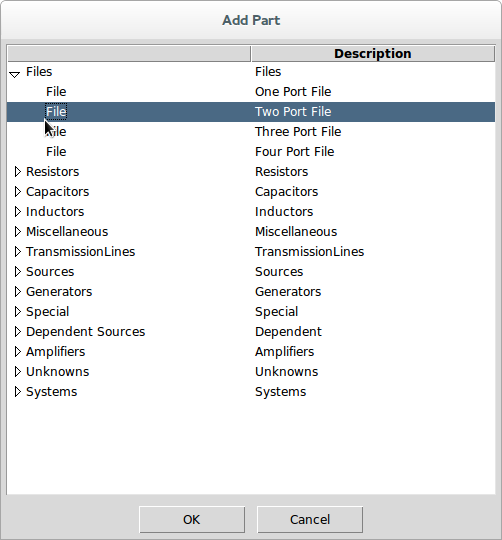
We browse to the file cable.s2p in the Examples directory:
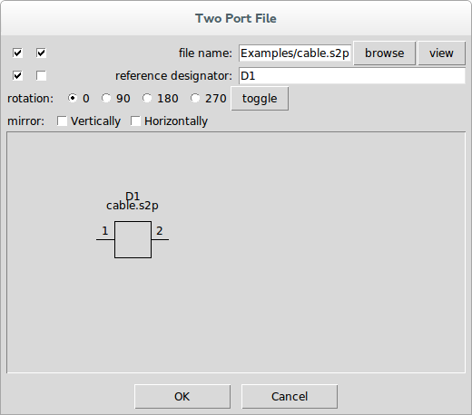
Pressing OK places the part in the schematic and we drag it to a good location:

Next, we add the unknown filter device using Add Unknown↓.
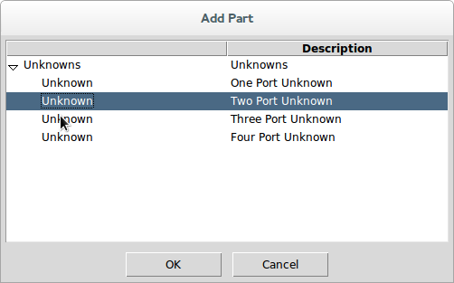
We enter Filter as the name of the unknown:
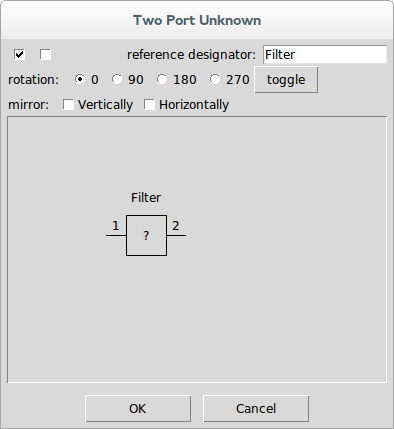
Pressing OK places the part in the schematic and we drag it and connect it to the cable:
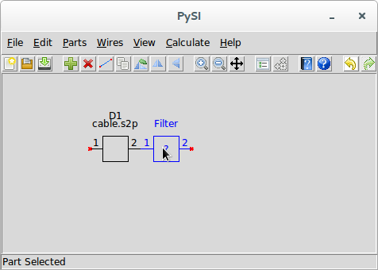
Next, we use Add Port↓ to add ports to the schematic. The properties dialog for the port shows port 1, so we use it as is. Pressing OK places the port in the schematic and we drag it so it is connected to the cable.
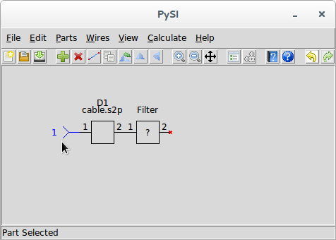
Using Add Port↓ again, we have the part properties showing port 2. In the part properties dialog, select the mirror horizontally checkbox:
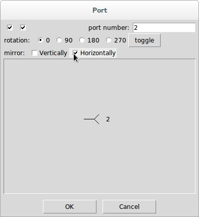
Press OK and drag the port so it is connected to the unknown filter:
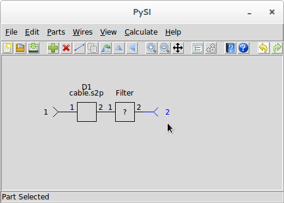
Almost done. We now add the system device by using Add System↓ and selecting a two port system:
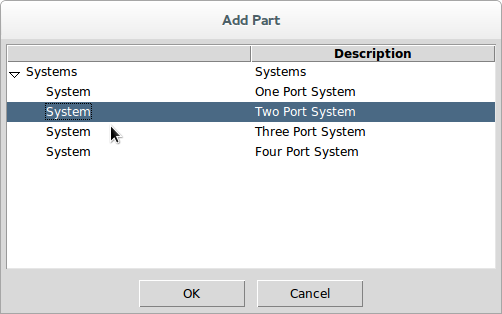
Browse to the CascCableFilter.s2p file:
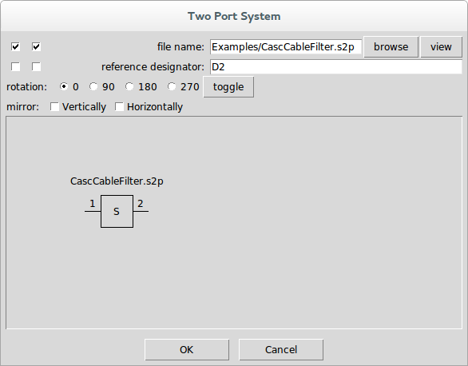
Press OK and place it anywhere in the schematic:
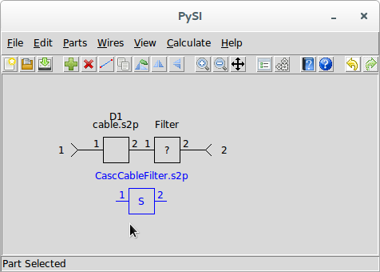
Assuming that the CascCableFilter.s2p file has the appropriate frequencies, we would want to retain them for the deembedding calculation, so we use S-parameter Viewer↓ and select the CasCableFilter.s2p file for viewing:
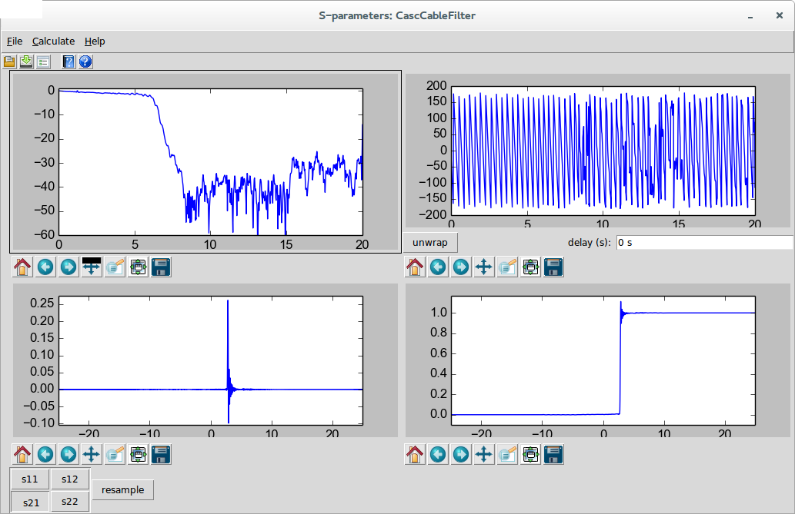
Here we can see that the end frequency is 20 GHz and the impulse response length is 50 ns.
We close this dialog and use Calculation Properties↓ and set the end frequency and impulse response length appropriately:
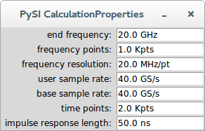
We not that this amounts to one thousand frequency points to 20 GHz.
Notice now that Calculate↓ and Deembed↓ are now enabled.
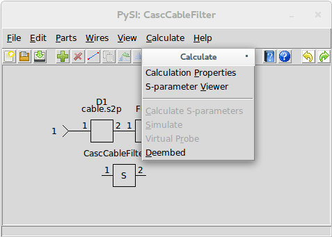
Use Deembed↓ to start the calculation. Once the calculation is complete, the S-parameter Viewer↓ is opened with the result of the deembedding. Use Save S-parameter File↓ to save the result to a file.
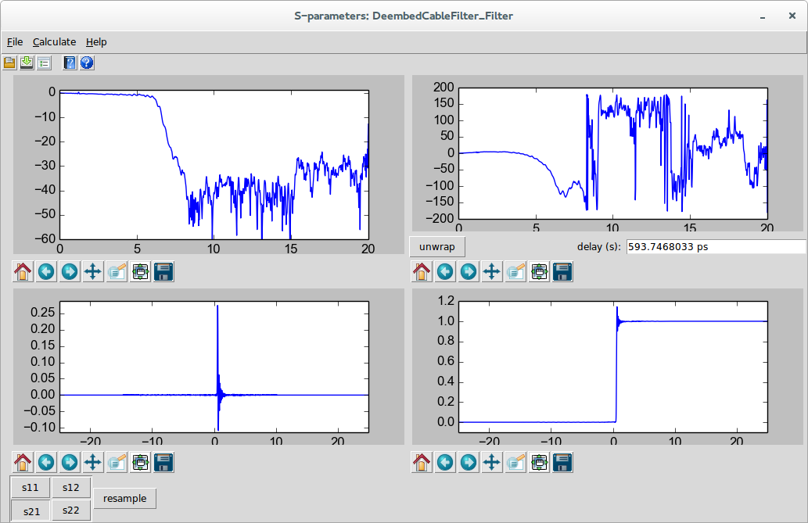
Note that I selected S21 for viewing in the above dialog, and pressed unwrap to remove the 593.7 ps of delay from the phase.